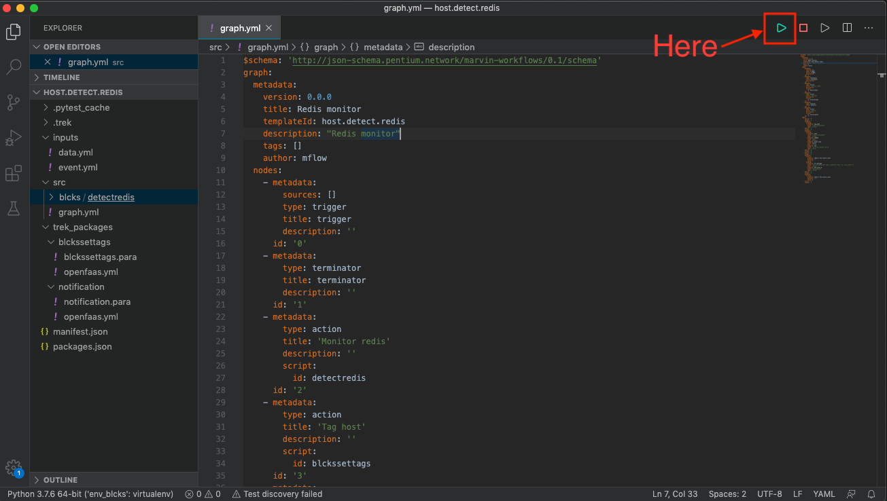
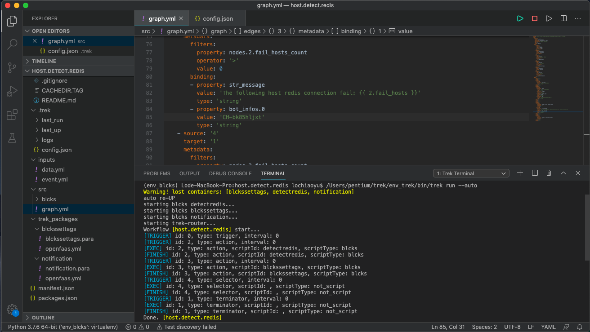

<!DOCTYPE html>
<!--[if IE 8]><html class="no-js lt-ie9" lang="en" > <![endif]-->
<!--[if gt IE 8]><!--> <html class="no-js" lang="en" > <!--<![endif]-->
<head>
  <meta charset="utf-8">
  
  <meta name="viewport" content="width=device-width, initial-scale=1.0">
  
  <title>The First Trek Project &mdash; Pentium</title>
  

  
  
  
  

  
  <script type="text/javascript" src="../../_static/js/modernizr.min.js"></script>
  
    
      <script type="text/javascript" id="documentation_options" data-url_root="../../" src="../../_static/documentation_options.js"></script>
        <script src="../../_static/jquery.js"></script>
        <script src="../../_static/underscore.js"></script>
        <script src="../../_static/doctools.js"></script>
        <script src="../../_static/language_data.js"></script>
    
    <script type="text/javascript" src="../../_static/js/theme.js"></script>

    

  
  <link rel="stylesheet" href="../../_static/css/theme.css" type="text/css" />
  <link rel="stylesheet" href="../../_static/pygments.css" type="text/css" />
  <link rel="stylesheet" href="../../_static/css/table.css" type="text/css" />
    <link rel="index" title="Index" href="../../genindex.html" />
    <link rel="search" title="Search" href="../../search.html" /> 
</head>

<body class="wy-body-for-nav">

   
  <div class="wy-grid-for-nav">
    
    <nav data-toggle="wy-nav-shift" class="wy-nav-side">
      <div class="wy-side-scroll">
        <div class="wy-side-nav-search" >
          

          
            <a href="../../index.html" class="icon icon-home"> Marvin Development Guide
          

          
          </a>

          
            
            
              <div class="version">
                1.0.0
              </div>
            
          

          
<div role="search">
  <form id="rtd-search-form" class="wy-form" action="../../search.html" method="get">
    <input type="text" name="q" placeholder="Search docs" />
    <input type="hidden" name="check_keywords" value="yes" />
    <input type="hidden" name="area" value="default" />
  </form>
</div>

          
        </div>

        <div class="wy-menu wy-menu-vertical" data-spy="affix" role="navigation" aria-label="main navigation">
          
            
            
              
            
            
              <p class="caption"><span class="caption-text">GETTING STARTED</span></p>
<ul>
<li class="toctree-l1"><a class="reference internal" href="../../start/index.html">Introduction</a></li>
<li class="toctree-l1"><a class="reference internal" href="../../start/index.html#system-requirements">System Requirements</a></li>
<li class="toctree-l1"><a class="reference internal" href="../../start/index.html#installing-trek-cli">Installing Trek CLI</a></li>
<li class="toctree-l1"><a class="reference internal" href="../../start/index.html#config-development-environment">Config Development Environment</a></li>
<li class="toctree-l1"><a class="reference internal" href="../../start/index.html#the-project-directory-structure">The Project Directory Structure</a></li>
<li class="toctree-l1"><a class="reference internal" href="../../start/quick_start.html">Quick Start</a></li>
</ul>
<p class="caption"><span class="caption-text">USER GUIDE</span></p>
<ul>
<li class="toctree-l1"><a class="reference internal" href="../../workflow/index.html">Developer Workflow</a></li>
<li class="toctree-l1"><a class="reference internal" href="../../blcks/index.html">Developer Blcks</a></li>
<li class="toctree-l1"><a class="reference internal" href="index.html">Working with VSCode Extension</a></li>
</ul>
<p class="caption"><span class="caption-text">REFERENCE</span></p>
<ul>
<li class="toctree-l1"><a class="reference internal" href="../../cli/commands.html">CLI Command Reference</a></li>
<li class="toctree-l1"><a class="reference internal" href="commands.html">VSCode Extension Commands</a></li>
<li class="toctree-l1"><a class="reference internal" href="../../library/index.html">Library List</a></li>
<li class="toctree-l1"><a class="reference external" href="https://github.com/pnetwork/core.trek.doc/tree/gh-pages/example/">Samples</a></li>
</ul>
<p class="caption"><span class="caption-text">ABOUT</span></p>
<ul>
<li class="toctree-l1"><a class="reference internal" href="../../cli/changelog.html">Trek CLI Changelog</a></li>
<li class="toctree-l1"><a class="reference internal" href="changelog.html">Trek VSCode Extension Changelog</a></li>
<li class="toctree-l1"><a class="reference external" href="https://github.com/pnetwork/core.trek.doc/issues/">Issues Report</a></li>
</ul>

            
          
        </div>
      </div>
    </nav>

    <section data-toggle="wy-nav-shift" class="wy-nav-content-wrap">

      
      <nav class="wy-nav-top" aria-label="top navigation">
        
          <i data-toggle="wy-nav-top" class="fa fa-bars"></i>
          <a href="../../index.html">Marvin Development Guide</a>
        
      </nav>


      <div class="wy-nav-content">
        
        <div class="rst-content">
        
          


<div role="navigation" aria-label="breadcrumbs navigation">

  <ul class="wy-breadcrumbs">
    
      <li><a href="../../index.html">Docs</a> &raquo;</li>
        
      <li>The First Trek Project</li>
    
    
      <li class="wy-breadcrumbs-aside">
        
            
        
      </li>
    
  </ul>

  
  <hr/>
</div>
          <div role="main" class="document" itemscope="itemscope" itemtype="http://schema.org/Article">
           <div itemprop="articleBody">
            
  <div class="section" id="the-first-trek-project">
<h1>The First Trek Project<a class="headerlink" href="#the-first-trek-project" title="Permalink to this headline">¶</a></h1>
<div class="line-block">
<div class="line">假設我們的開發範例：</div>
<div class="line">監控 redis 的連線，若連線不到標註 <code class="docutils literal notranslate"><span class="pre">&lt;redis:unreachable&gt;</span></code> 標籤，並發送 chatbot 通知。</div>
<div class="line">因此 workflow 需要三個腳本：</div>
</div>
<ol class="arabic simple">
<li><p>撈出特定服務器來檢查 redis 是否正常</p></li>
<li><p>針對結果打上標籤</p></li>
<li><p>發送通知 (若有不正常的)</p></li>
</ol>
<p>其中 1 為此次新增腳本，2, 3 則為既有腳本可直接安裝</p>
<div class="admonition note">
<p class="admonition-title">Note</p>
<p>以下專案程式請參考 <a href="#id1"><span class="problematic" id="id2">:examplelink:`範例專案 &lt; &gt;`</span></a>。</p>
</div>
<div class="section" id="step-1-create-project">
<h2>Step 1. Create project<a class="headerlink" href="#step-1-create-project" title="Permalink to this headline">¶</a></h2>
<p>使用 Command Palette 叫出「 <a class="reference internal" href="../../reference/extension/commands/create_project.html"><span class="doc">Trek Shell: Deploy Packed Packages to Marvin</span></a> 」指令，並填入以下資訊：</p>

<ol class="arabic simple">
<li><p>選擇專案存放位置。</p></li>
<li><p>輸入專案名稱為「host.detect.redis」。</p></li>
<li><p>輸入「N」不產生範本專案。</p></li>
<li><p>右下角顯示建立專案成功訊息，並以 workspace 方式開啟專案</p></li>
</ol>
</div>
<div class="section" id="step-2-create-blcks">
<h2>Step 2. Create blcks<a class="headerlink" href="#step-2-create-blcks" title="Permalink to this headline">¶</a></h2>
<div class="line-block">
<div class="line">建立一個 blcks 腳本，用來檢查 redis 連線。</div>
<div class="line">使用「 <span class="xref std std-doc">../../reference/extension/commands/create_blcks</span> 」指令建立 blcks 腳本：</div>
</div>

<ol class="arabic">
<li><p>輸入 blcks 腳本名稱為「detectredis」，產生的腳本位置於 <em>host.detect.redis/src/blcks/</em> 下。</p></li>
<li><p>定義腳本輸入輸出欄位於檔案 <em>detectredis/detectredis.para</em> ：</p>
<blockquote>
<div><ul class="simple">
<li><p>Inputs: 服務器標籤。撈取含此標籤的服務器做檢查，此範例標籤會是 <code class="docutils literal notranslate"><span class="pre">&lt;redis&gt;</span></code>；</p></li>
<li><p>Outputs: 連線不到的服務器、和其數量。</p></li>
</ul>
</div></blockquote>
</li>
<li><p>撰寫腳本主程式：</p>
<blockquote>
<div><div class="line-block">
<div class="line">主程式檔案位於 <em>detectredis/handler/handler.py</em>；</div>
<div class="line">撈取含 <code class="docutils literal notranslate"><span class="pre">&lt;redis&gt;</span></code> 的服務器，並檢查是否可連線，若連線失敗就把此台服務器加入 outputs 中。</div>
</div>
<div class="admonition warning">
<p class="admonition-title">Warning</p>
<ul class="simple">
<li><p>記得將主程式中使用的套件寫入 <em>handler/requirements.txt</em> 中。</p></li>
<li><p>process function 的參數與 return 要跟 para schema 定義的一致。</p></li>
<li><p>在 <code class="docutils literal notranslate"><span class="pre">handler.py</span></code> 中可以使用 blcks sdk 提供的 service 來操作 Marvin 平台上的資產，請參考 <a class="reference internal" href="../../blcks/index.html"><span class="doc">Developer Blcks</span></a> 。</p></li>
</ul>
</div>
</div></blockquote>
</li>
</ol>
</div>
<div class="section" id="step-3-install-scripts">
<h2>Step 3. Install scripts<a class="headerlink" href="#step-3-install-scripts" title="Permalink to this headline">¶</a></h2>
<div class="line-block">
<div class="line">從 script repository 安裝腳本。</div>
<div class="line">執行「Trek: Install Script」指令，安裝腳本：</div>
</div>
<ul class="simple">
<li><p>資產設定標籤(blckssettags)</p></li>
<li><p>傳送訊息至指定頻道(notification)</p></li>
</ul>
<div class="line-block">
<div class="line">VSCode Terminal 視窗將顯示安裝的進度和結果：</div>
</div>

<div class="line-block">
<div class="line">安裝下載的腳本檔案放在 <em>trek_packages/</em> 資料夾下； 同時也寫入一筆腳本至依賴安裝描述檔 <code class="docutils literal notranslate"><span class="pre">packages.json</span></code>。</div>
</div>
<div class="admonition note">
<p class="admonition-title">Note</p>
<p>可下載的腳本清單來自Pentium 提供的公眾腳本 <a class="reference internal" href="../../library/index.html#scripts-list"><span class="std std-ref">Scripts list</span></a>。</p>
</div>
</div>
<div class="section" id="step-4-edit-workflow-template">
<h2>Step 4. Edit workflow template<a class="headerlink" href="#step-4-edit-workflow-template" title="Permalink to this headline">¶</a></h2>
<div class="line-block">
<div class="line">接著開啟專案下的 <em>src/graph.yml</em> ，開始編輯 workflow template 檔案，定義好整個工作流程。</div>
<div class="line">編輯完成，若要使用進階功能查看 workflow 流程圖，參考  <a class="reference internal" href="../../reference/cli/commands/graph.html"><span class="doc">指令說明</span></a>。</div>
<div class="line">在 vscode  workflow template 的編輯區塊上按右鍵選擇「View Workflow Template Graph」，檢視 workflow 流程圖。</div>
</div>

</div>
<div class="section" id="step-5-run">
<h2>Step 5. Run<a class="headerlink" href="#step-5-run" title="Permalink to this headline">¶</a></h2>
<div class="line-block">
<div class="line">在 vscode extension 執行工作流程很簡單，先打開 workflow template 檔案，此時編輯視窗右上方會出現按鈕 ，按下即可執行：</div>
<div class="line">等同於執行「 <a class="reference internal" href="../../reference/extension/commands/run.html"><span class="doc">Trek: List Remote Scripts</span></a> 」指令。</div>
</div>

<div class="line-block">
<div class="line">VSCode Terminal 視窗將顯示執行進度和結果：</div>
</div>

<p>若需要停止執行的環境請使用 ，等同於執行「 <a class="reference internal" href="../../reference/extension/commands/shutdown_env.html"><span class="doc">Trek: Shutdown Env</span></a> 」指令。</p>
</div>
<div class="section" id="step-6-deploy">
<h2>Step 6. Deploy<a class="headerlink" href="#step-6-deploy" title="Permalink to this headline">¶</a></h2>
<div class="line-block">
<div class="line">在本機執行正確後，即可佈署至 Marvin 平台。</div>
<div class="line">執行「 <a class="reference internal" href="../../reference/extension/commands/deploy_to_marvin.html"><span class="doc">Trek Shell: Pack</span></a> 」指令，將會進行建置、push to dockerhub、打包和佈署。</div>
</div>

<ol class="arabic simple">
<li><p>選擇佈署來源為「The Trek Project」。</p></li>
<li><p>輸入「Y」表示覆蓋 Marvin 平台同名腳本及工作流程。</p></li>
<li><p>VSCode Terminal 視窗將顯示佈署進度和結果。</p></li>
<li><p>可以至 Marvin 平台使用此次佈署的腳本及工作流程。</p></li>
</ol>
</div>
</div>


           </div>
           
          </div>
          <footer>
  

  <hr/>

  <div role="contentinfo">
    <p>
        &copy; Copyright 2020, Pentium Network Technology Ltd. All rights reserved.

    </p>
  </div>
  Built with <a href="http://sphinx-doc.org/">Sphinx</a> using a <a href="https://github.com/rtfd/sphinx_rtd_theme">theme</a> provided by <a href="https://readthedocs.org">Read the Docs</a>. 

</footer>

        </div>
      </div>

    </section>

  </div>
  


  <script type="text/javascript">
      jQuery(function () {
          SphinxRtdTheme.Navigation.enable(true);
      });
  </script>

  
  
    
   

</body>
</html>